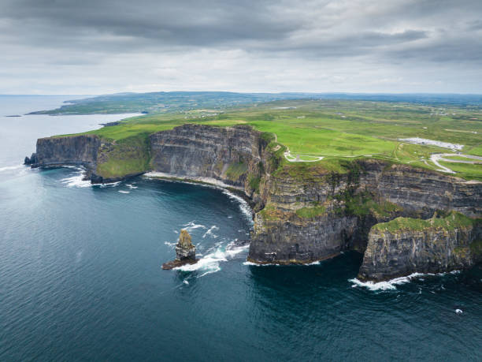

Intro
This is a colege project. Sligo is a town in County Sligo, Republic of Ireland. It is not the largest town in the country but is the second largest rural area in Connacht after Galway city. It is home to Sligo Rovers F.C. who play in the League of Ireland Premier Division and won the League in 2012 it also homes Sligo G.A.A team. Sligo Rugby Club is in Strandhill. Sligo has a population of around 20,000 and has many tourist attractions. Sligo is at the end of the railway line from Dublin.
Brief History
The town of Sligo has its beginnings in the Anglo/Norman occupation of Ireland when Maurice Fitzgerald built the castle of Sligo in 1239 and the Dominican Abbey was founded in 1252. The area also figures prominently in the golden age of monastic Ireland symbolised by the Tara Brooch, the Ardagh Chalice and the Book of Kells. Some of the great source books of Irish history and genealogy were compiled in the county of Sligo. Poets were established as the aristocrats of early Irish society and many, including the O'Dalys, the O'Rourkes and the O'Higgins originated in the Sligo area.The submission of the Irish chieftains to the English throne in 1500 marked the beginning of a downward slide in the fortunes of Sligo. Insurrection and ruin marked the countryside. Sligo town - including the Dominican Abbey - was burned in 1642 by Sir Frederick Hamilton and 300 people were killed by rampaging soldiers. In the Cromwellian destruction woman and children were the main targets of genocide. Irish Catholics were forbidden to own land, the dispossessed were shipped to the Caribbean as slaves to the West Indian sugar plantations, and 63,000 acres of Sligo land were handed over to Cromwellian soldiers.
Location
The Wild Atlantic Way, 1600 miles (2600 km) in length, is one of the longest defined coastal route in the world. It winds its way all along the Irish west coast from the Inishowen Peninsula in the north down to the picturesque town of Kinsale, County Cork, in the south. This route from start to finish unfolds the wonders of nature, the power of the ocean and its imprint on the west coast of Ireland, and the stunning countryside in all its diversity. Enchanting villages are nestled along the coast as well as ancient monuments – their origins having long sunk into the mists of oblivion dot the landscape. Behind every bend on this magical coastal road a new delight awaits.The wild Atlantic with its unrestrained and untameable tides and storms has continuously been moulding the west coast of Ireland. With a constant meeting of water and land, a deeply indented and wild terrain has emerged with towering cliffs, spellbinding bays and beaches, mystical islands, always changing and never reaching the end. In the isolation or perhaps expressed in a different way living near and with the Atlantic at your doorstep has ensured that old traditions and the Irish language have been preserved. A trip along the Wild Atlantic Way is also an encounter with the past.